基本情况
先看数据包
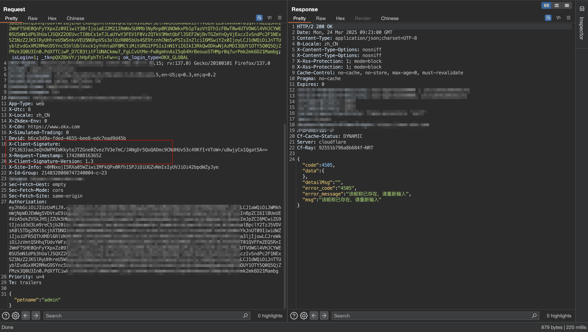
数据包中存在X-Client-Signature:、X-Request-Timestamp、X-Client-Signature-Version三个字段，无法修改请求参数，且数据包会过期，时间大概是一分钟，过期后返回令牌验证失败 ({reason})。
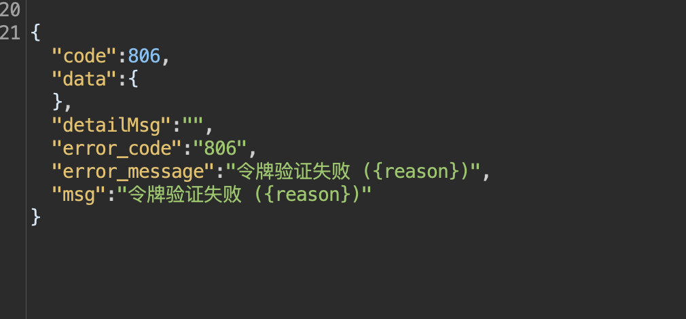
签名函数
先f12通过关键字定位签名函数
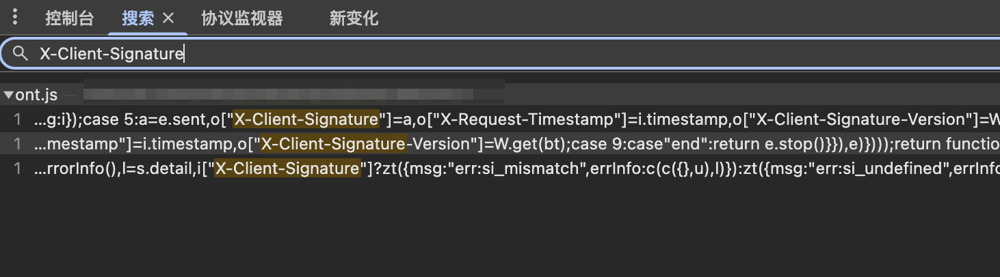
找倒是很快就找到了，但是当我想断点时却发现，直接跳到一个没见过的地方，只返回两句消息
1 | // Please wait a bit. |
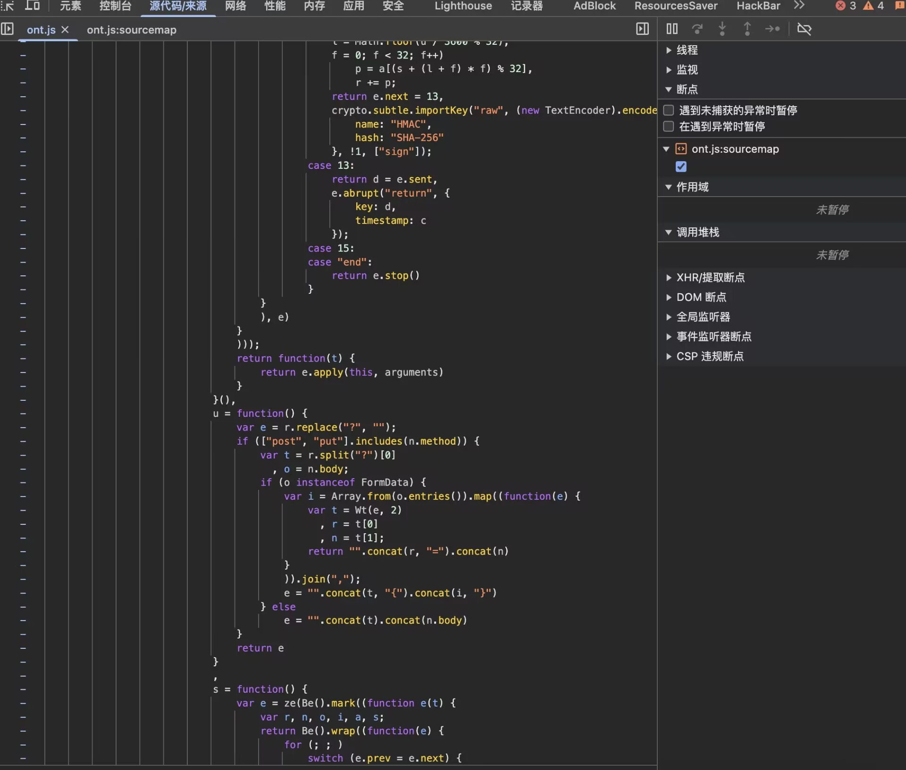
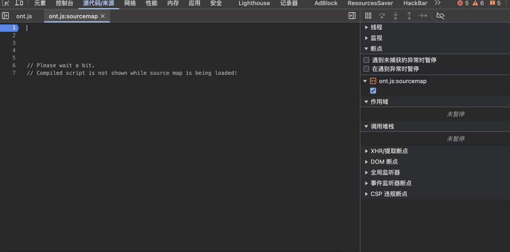
查了一圈没差明白是啥情况，发现使用火狐浏览器可以正常断点，所以之后都用火狐浏览器进行的逆向。
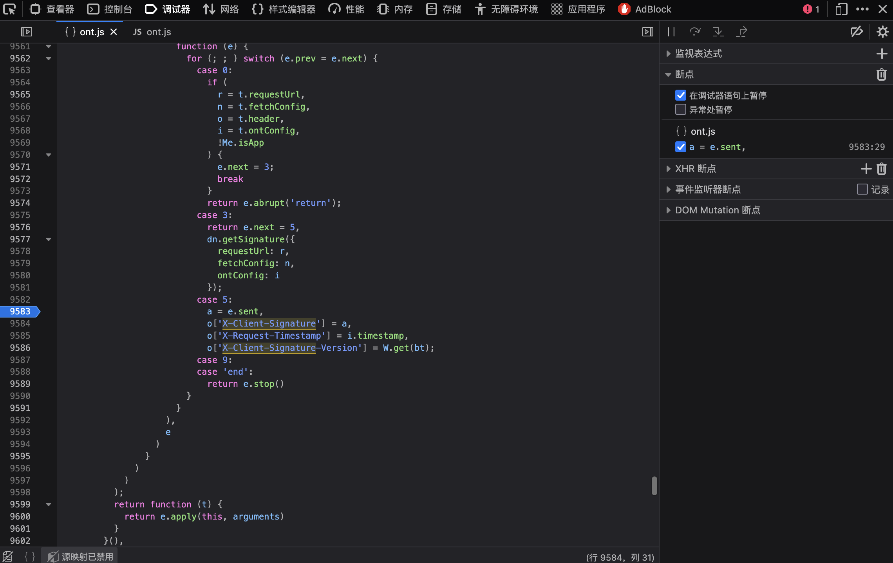
（后面在群里问了一些大哥，发现只需要取消勾选谷歌浏览器的javaScript 源代码映射就可以解决这个问题。
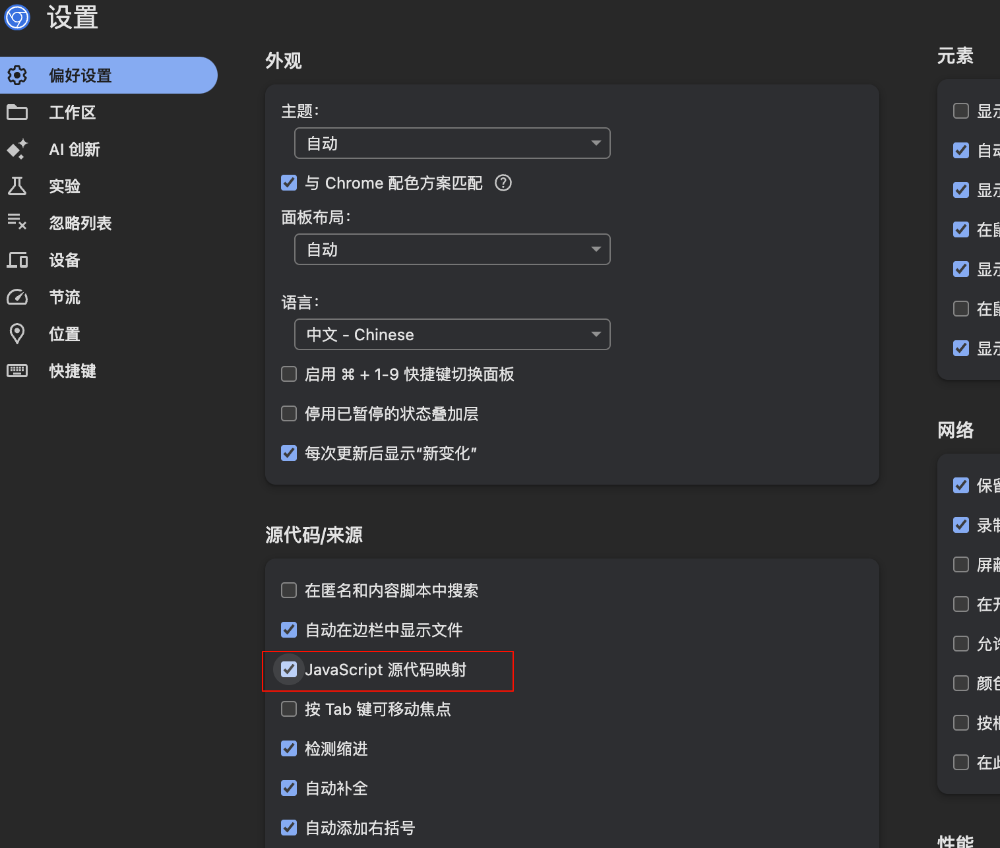
可以正常下断点后，就开始逆向了
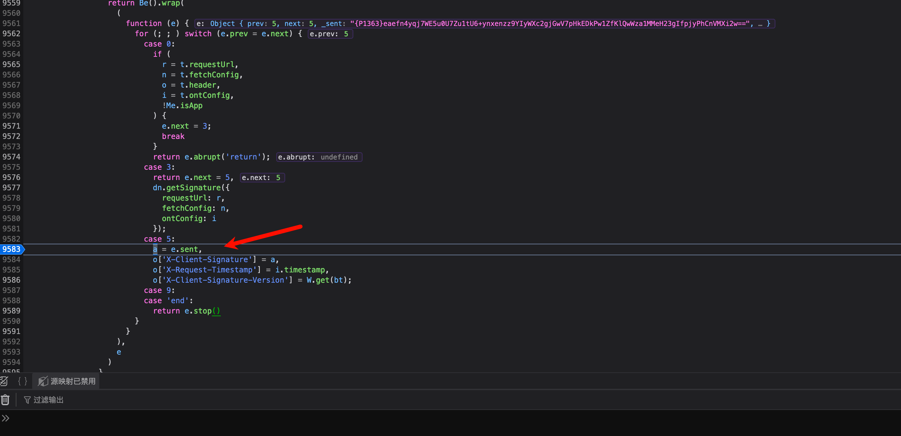
在case 5这里，定义了我们需要的X-Client-Signature、X-Request-Timestamp、X-Client-Signature-Version三个字段，其中
X-Client-Signature-Version是由W.get(bt)函数生成的，通过简单的分析，可以得知这个函数内容就是获取一个固定值，比较简单。
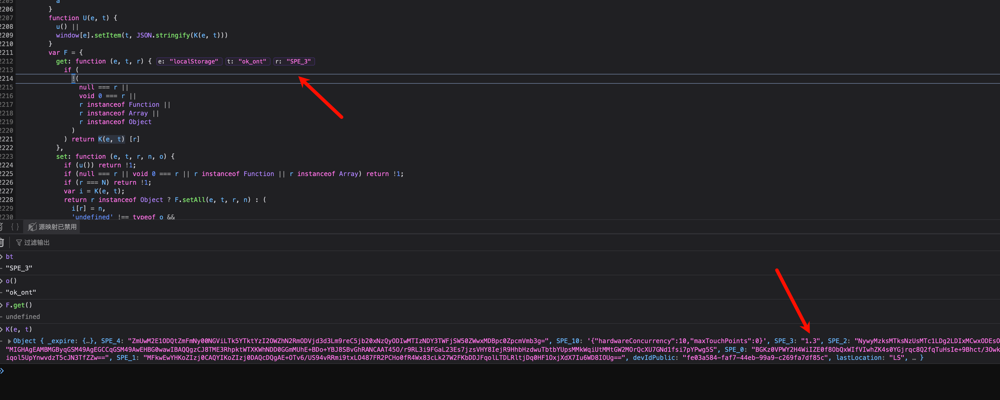
X-Request-Timestamp是取的i.timestamp，而i的定义在case 0中，t.ontConfig，而t则是从入参，不太好找，但是考虑到它的值貌似是一个普通的时间戳，可以看是否能手动生产
X-Client-Signature是通过 e.sent获取到的，而e.sent这个东西，和case这块的代码有关，可以在上面case 3中看到一个return，case 5中的e.sent的值就是上面case 3中return的值。
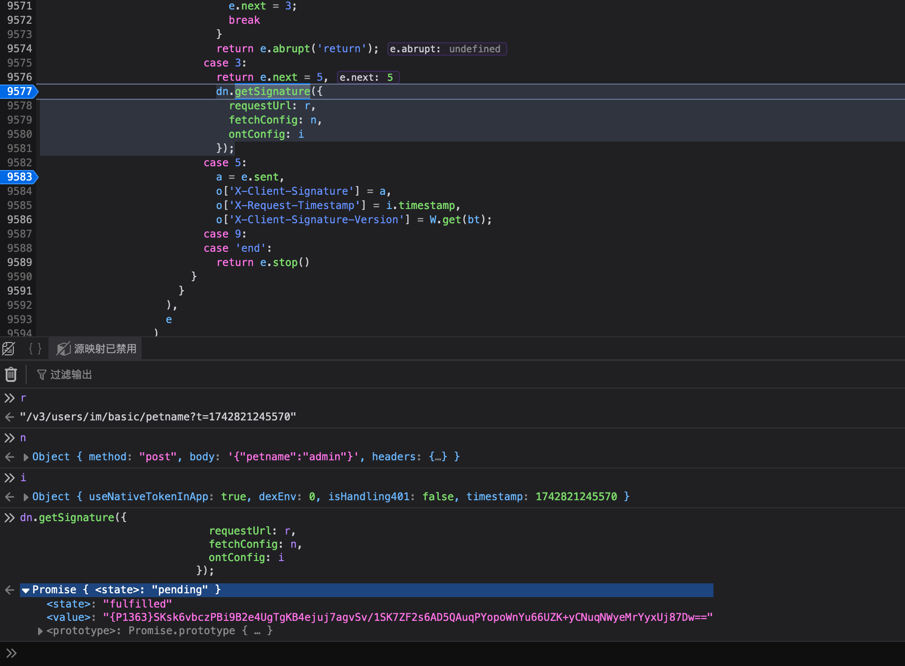
将断点下载case 3中，通过观察入参以及变量名可以知道，签名和url，请求方法（请求参数），时间戳有关。不过n和i的变量类型都是object，所以在写脚本的时候只需要注意修改requestUrl和fetchConfig，以及控制时间戳就行了，手动构造了一下js代码
1 | dn.getSignature(JSON.parse('{"requestUrl":"/v3/users/im/basic/petname","fetchConfig":{"method":"post","body":"{\\"petname\\":\\"admin\\"}","headers":{"Content-Type":"application/json"}},"ontConfig":{"useNativeTokenInApp":true,"dexEnv":0,"isHandling401":false,"timestamp":1742822711366}}')) |
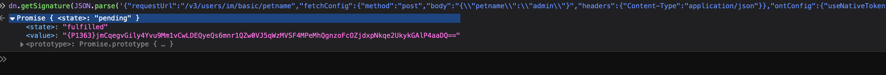
运行是没问题的
所以在python脚本中，只需要修改requestUrl的值、body的内容以及timestamp就行，大致代码如下：
1 | tmp = f'''{{"requestUrl":"{url}","fetchConfig":{{"method":"post","body":{data2},"headers":{{"Content-Type":"application/json"}}}},"ontConfig":{{"useNativeTokenInApp":true,"dexEnv":0,"isHandling401":false,"timestamp":{newTimestamp}}}}}''' |
不过这里有两个坑点，
异步函数
仔细观察上面执行签名函数的输出可以看到，它不像普通的js函数，执行后直接就是结果，这里有一个Promise { <state>: "pending" 。这种就是异步函数。
如果直接用以前的方法将函数通过window代理出来,然后直接通过http://localhost:12080/execjs执行js的方式获取函数执行结果，会发现不行，得到的结果是{}
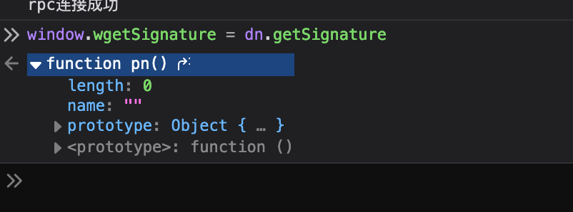
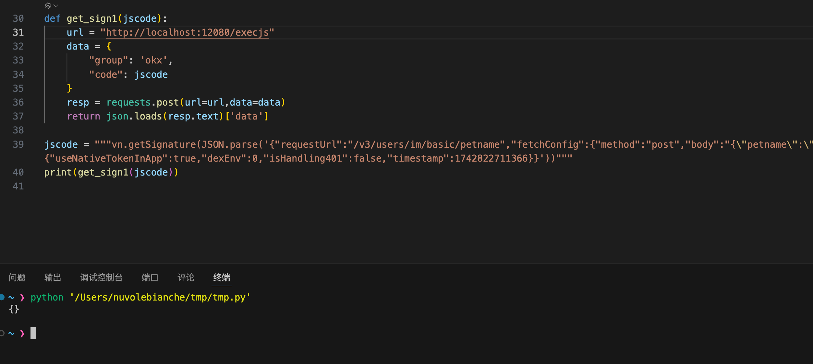
所以需要换一个方法，通过先在浏览器里注册一个方法，然后通过http://localhost:12080/go调用该方法，然后由于需要调用的方法是异步函数，所以注册方法的js也会有一些不同，具体可以看https://github.com/jxhczhl/JsRpc/issues/12。简单说一下，签名函数相关代码如下
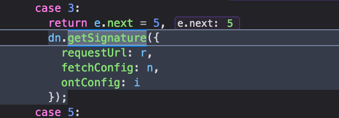
看上去好像传了3个参数，r、n、i，实际上只传入了一个参数，一个有3个键值对的json，稍微优化一下代码如下，
dn.getSignature({requestUrl: r,fetchConfig: n,ontConfig: i});
入参为{requestUrl: r,fetchConfig: n,ontConfig: i}。所以在编写注册方法代码时，只需要传入一个参数即可
注册方法如下，核心部分就是dn.getSignature(JSON.parse(atob(param)))。其中可以JSON.parse是将字符串变成json，但是还有一个atob的base64解码，这个涉及到第二个问题，后面再说
1 | demo.regAction('getSignature', async (resolve, param) => { |
\
第二个问题就是反斜杠，
1 | tmp = f'''{{"requestUrl":"{url}","fetchConfig":{{"method":"post","body":{data2},"headers":{{"Content-Type":"application/json"}}}},"ontConfig":{{"useNativeTokenInApp":true,"dexEnv":0,"isHandling401":false,"timestamp":{newTimestamp}}}}}''' |
通过如上的python代码print出来的js代码如下
1 | dn.getSignature(JSON.parse('{"requestUrl":"/v3/users/im/basic/petname","fetchConfig":{"method":"post","body":"{\"petname\":\"admin\"}","headers":{"Content-Type":"application/json"}},"ontConfig":{"useNativeTokenInApp":true,"dexEnv":0,"isHandling401":false,"timestamp":1742822711366}}')) |
然而这个js直接丢到控制台中运行是会出错的
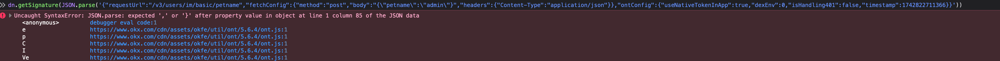
具体原因可以和上面能正常运行的js对比一下就知道，在”body”这里，出错的js只有一个\,而能正常运行的js有两个\
这里先来写一下普通的直接传入字符串的注册方法
1 | demo.regAction('tmpgetSignature', async (resolve, param) => { |
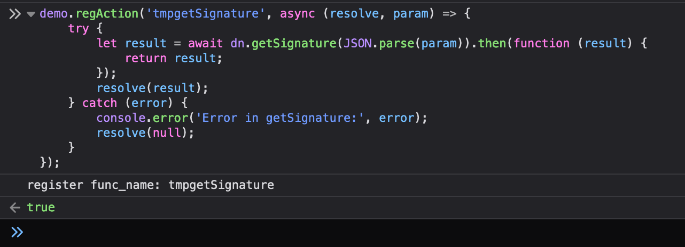
然后python这边大概如下：
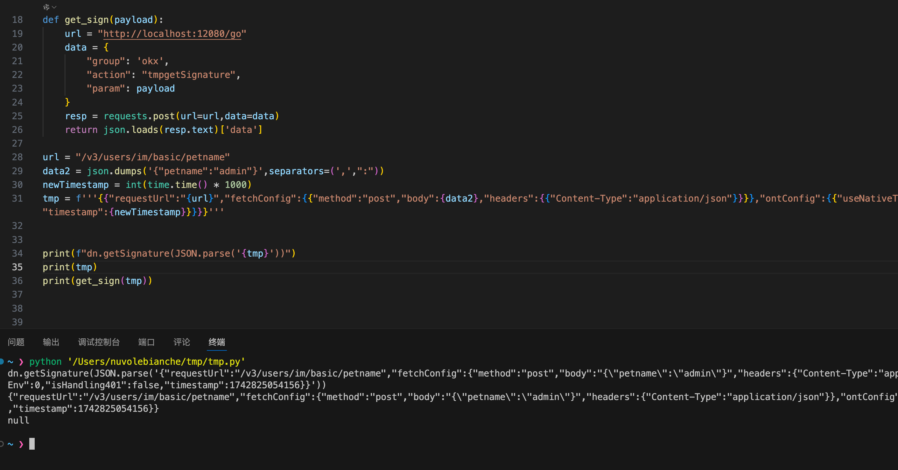
但是js这边毫不留情的报错了
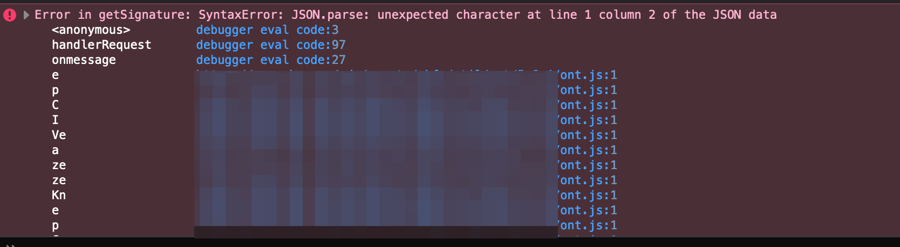
起初我发现这边的生成的tmp，直接丢到js中报错，我一直以为是\数量的问题，所以通过替换的方法给他增加到了两个\
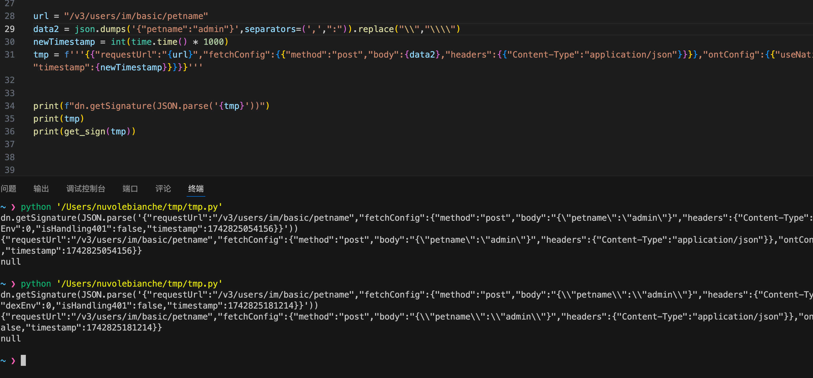
但是js依旧报错，但是报错又不一样了，一个是unexpected character。一个是expected ‘,’or ‘}’ after property value in object
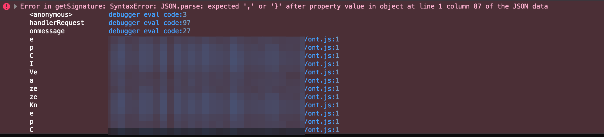
可是这里的js明明又是可以执行的，就搞得我很烦，找了一圈没找到方法，
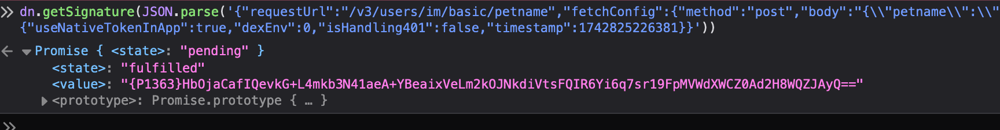
后面灵机一动,想到python这边拼接成的参数可能并不是我真正看到样子，所以我用encode()编码输出了一下tmp字符串，发现它其实就是有两个\的，所以才决定用base64编码python拼接好的参数发给jsrpc，
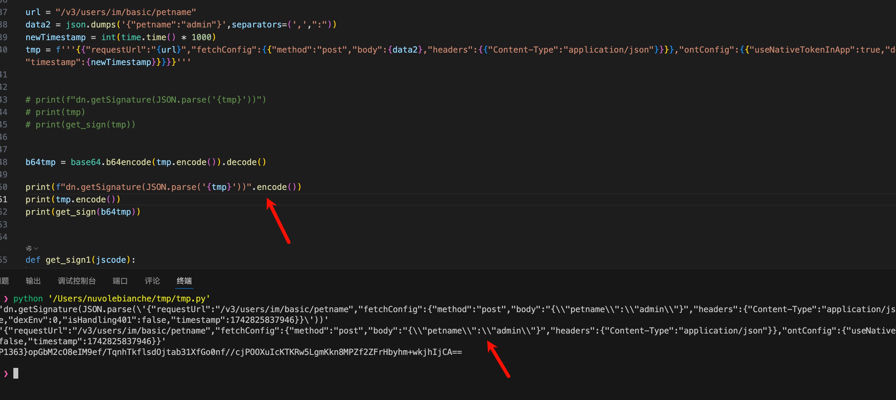
关键部分的python代码最终如下：
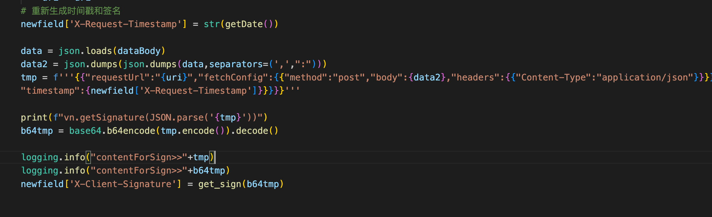
总结
简单总结一下就是两点，
- 对于异步加密函数，要用特殊的注册方法，使用http://localhost:12080/go进行传参和调用，
- 在使用python和js进行参数传递时，尽量对参数进行base64编码后再进行传递，能省很多事情，
加强基础学习学不动啊md